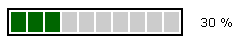

examples
examples$Date$
 Introduction
IntroductionThis example requires :
This example will run a ProgressBar in determinate mode that will log into a flat file ('progress_observer.log') each changes.
Here are the contents of that file :
A default progress bar observer is created at line 21, and attached at line 23
[Top]
 Render options
Render options speed = 100 is set at line 16
increment = 10 is set at line 18
border painted with all default options at line 17 (color=black, shape=solid). Set size to 2 pixels at line 30.
[Top]
 Output
Output
[Top]
 PHP source syntax highlight
PHP source syntax highlight[Top]
 Play demo
Play demoRun the script.
[Top]